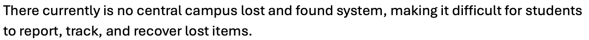
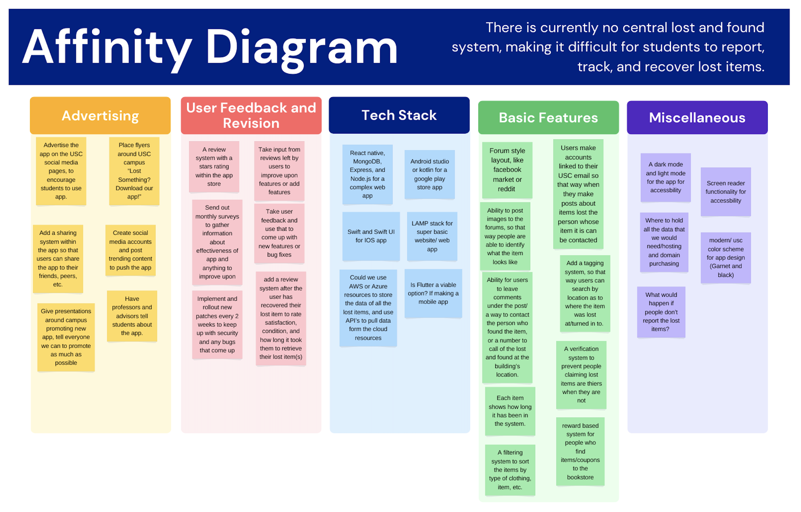
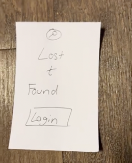
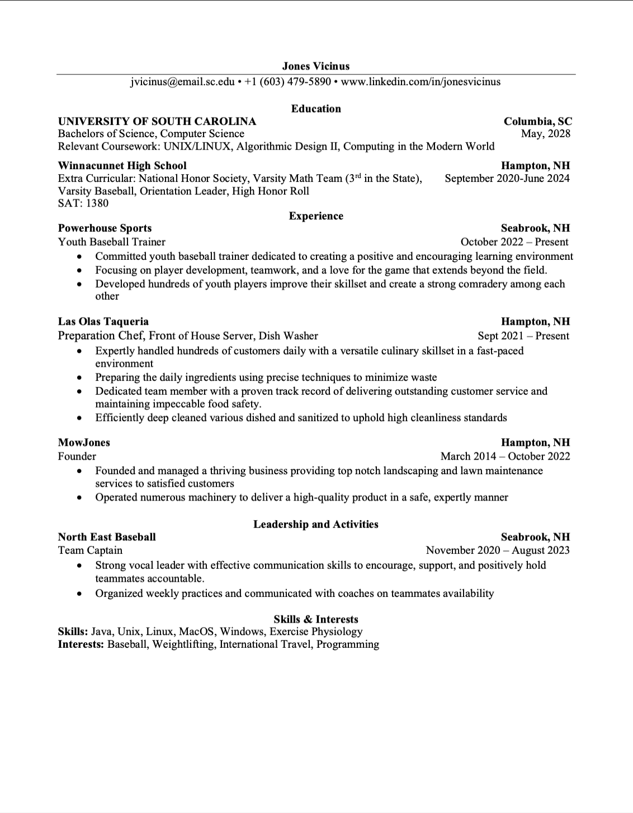
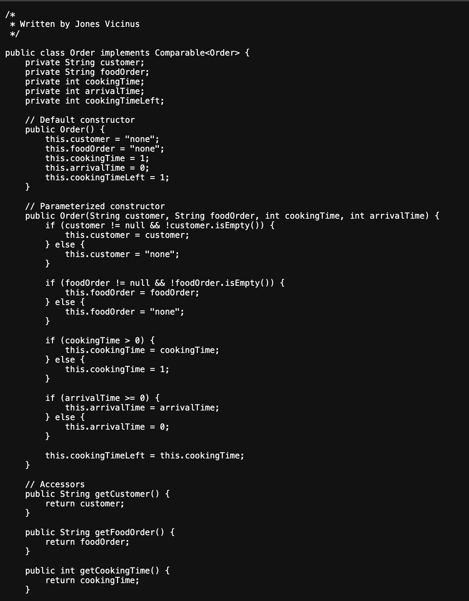

Problem Statement
There currently is no central campus lost and found system, making it difficult for students to report, track, and recover lost items.
Affinity Diagram
Affinity diagram is a great way to visualize ideas and elements to implement into a product. The group and I made 5 types of ideas including: advertising, user feedback and revision, tech stack, basic features, and miscellaneous. We included 32 different ideas with at least 5 in each category.
Sketches

Wireframe sketches are an excellent tool for developing a prototype view of an app you're designing. My group and I decided to create three different scenarios for three types of users interacting with our app. The first scenario involves a user who has lost an item and is using the forum to try to recover it. The second scenario features a user who has found a lost item and wants to report it on the forum. The third scenario focuses on a data scientist who is interested in collecting metrics such as the most common places where items are lost, the types of items most frequently lost, and the number of items that have been lost, recovered, or are still in the recovery process. The data scientist can export all of this information into a usable format, such as a .csv file, for further data processing and visualization.
Prototype
A paper prototype is a good way to see the functionality of your app before you actually design it. For my app design, my group wanted to design an app that allowed for a central system to post, recover, and track lost items. My video covers all functionality discussed in my wireframe sketches and I tried to model my user interface after apps that I was familiar with already.
Resume
A resume is a concise document that outlines an individual's professional background, including their skills, work experience, education, and accomplishments, tailored to a specific job or career path. Its purpose is to present qualifications effectively to potential employers and secure an interview opportunity.
Algorithmic Design Final Project
This is some sample code from my CSCE 146 class. This code is a part of my most recent assignment, where the task is to simulate a food order scheduling system that minimizes the average waiting time by processing orders based on their cooking time.